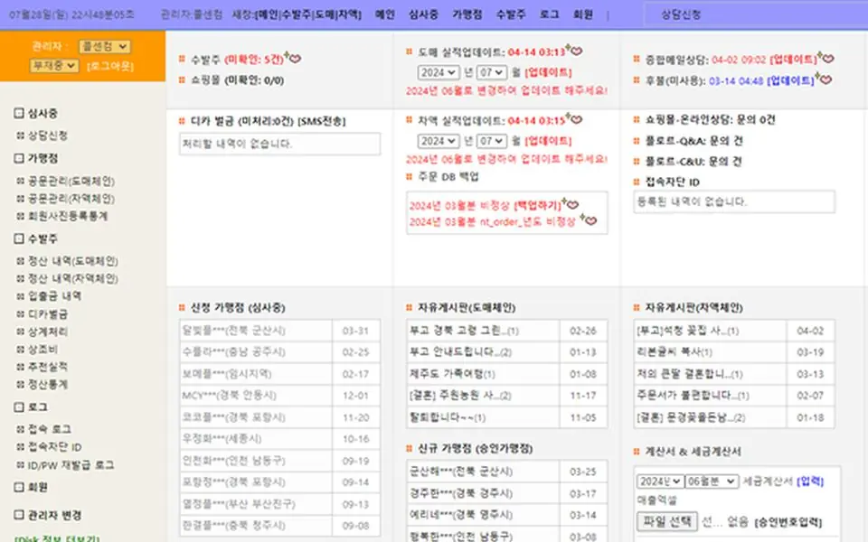
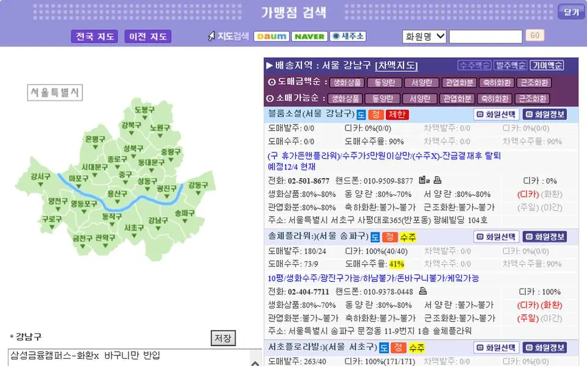

- 기간
- 2015년 01월 ~ 2020년 12월
- 맡은 역할
- 기획 · 설계 · 개발 · 운영 (개발팀 팀장)
- 사용 기술
- PHP
- MySQL
- jQuery
- JSON
- HTML
- CSS
- Apache
- Linux

미리보기 안을 스크롤하면 페이지 전체를 볼 수 있습니다.
01
개요
B2B 인트라넷과 쇼핑몰 서비스를 기획 단계의 요구사항 분석부터 화면·기능 설계, PHP 기반 개발, 테스트와 운영 적용까지 직접 맡아 진행했습니다. 오픈 이후에도 기존 시스템을 유지보수하며 사용자 요구에 맞춰 기능을 꾸준히 개선했습니다.
02
담당 작업
기획 · 설계
- B2B 인트라넷 및 쇼핑몰 서비스 기획 및 요구사항 분석
- 웹사이트 화면 및 기능 설계
- MySQL/MariaDB 데이터베이스 설계 및 연동
개발
- PHP 기반 웹 애플리케이션 개발
- 회원관리, 게시판, 관리자 기능 등 주요 기능 개발
- 쇼핑몰 상품·주문·회원·관리자 기능 개발
- HTML/CSS/JavaScript를 활용한 웹 화면 개발
테스트 · 검수
- 개발 기능에 대한 단위 테스트 및 통합 테스트
- 오류 및 버그 원인 분석 및 수정
- 개발 완료 후 기능 검수 및 운영환경 적용
운영 · 유지보수
- 기존 시스템 유지보수 및 기능 개선
- 사용자 요구사항에 따른 추가 기능 개발
03
문제와 해결
문제
운영 중인 수발주 시스템에 사용자 요청에 따른 기능을 계속 추가하다 보니, 한 곳을 고치면 다른 기능에서 오류가 생기는 경우가 있었습니다. 주문·회원·정산 데이터가 서로 연결돼 있어 작은 오류도 업무에 바로 영향을 주었습니다.
해결
기능을 개발할 때마다 단위 테스트와 통합 테스트를 거친 뒤 검수하고 운영환경에 적용하는 절차를 지켰습니다. 오류가 생기면 원인을 끝까지 분석해 수정하고, 데이터베이스 구조를 함께 점검해 같은 문제가 다시 생기지 않도록 했습니다.
04
성과
B2B 수발주 통합 인트라넷과 쇼핑몰을 기획부터 개발·검수·운영까지 6년간 직접 맡아, 오류 수정과 기능 개선을 이어 가며 서비스를 안정적으로 운영했습니다.
05
화면 모음

관리자 화면 · 수발주·정산 관리 
가맹점 검색 · 지도 기반 지역 선택